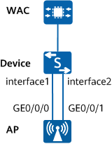

Example for Configuring an Eth-Trunk for AP Uplink Wired Interfaces
Networking Requirements
This example assumes an AP with the name AP1, MAC address 00e0-fc11-1111, and AP group ap-group1. The administrator wants to configure an Eth-Trunk for AP uplink wired interfaces to ensure uplink reliability of the AP.
WAC networking mode: Layer 2 in-path networking
Service data forwarding mode: tunnel forwarding

In this example, interface1 and interface2 represent GE0/0/1 and GE0/0/2, respectively.

Item |
Data |
|---|---|
Management VLAN for APs |
VLAN 100 |
AP wired port profiles |
|
AP group |
|
Precautions
This example applies to APs with at least two uplink wired interfaces.
- For an AP that has gone online, configure the Eth-Trunk function before connecting physical cables. Otherwise, loops may occur, causing the APs to go offline.
- For an AP that has not gone online, connect physical cables and then configure the Eth-Trunk function in the following sequence:
- Before the AP goes online, connect multiple physical cables between the AP and a switch. By default, the switch interfaces are enabled and are not configured with the Eth-Trunk function.
- Run the shutdown command in the interface view on the switch to shut down interfaces. Among the interfaces connected to the same AP, reserve only one enabled for the AP to go online.
- Configure the AP to go online, and configure the Eth-Trunk function on AP wired interfaces. Restart the AP so that the Eth-Trunk configuration takes effect.
- Configure an Eth-Trunk on the switch and run the undo shutdown command in the interface view to enable the interfaces that have been shut down.
The port isolation configuration is recommended on the ports of the device directly connected to APs. If port isolation is not configured and direct forwarding is used, a large number of unnecessary broadcast packets may be generated in the VLAN, blocking the network and degrading user experience.
In tunnel forwarding mode, the management VLAN and service VLAN cannot be the same. Only packets from the management VLAN can be transmitted between the WAC and APs. Packets from the service VLAN are not allowed to be transmitted between the WAC and APs.
Configuration Roadmap
- Connect physical cables between the AP and Device.
- Run the shutdown command in the interface view on Device to shut down interfaces. Among the interfaces connected to the same AP, reserve only one enabled for the AP to go online.
- Configure the AP to go online, and configure the Eth-Trunk function on AP wired interfaces. Restart the AP so that the Eth-Trunk configuration takes effect.
- Configure an Eth-Trunk on Device and run the undo shutdown command in the interface view to enable the interfaces that have been shut down.
Procedure
- Connect physical cables between the AP and Device.
- Run the shutdown command in the interface view on Device to shut down interfaces. Among the interfaces connected to the same AP, reserve only one enabled for the AP to go online.
<HUAWEI> system-view [HUAWEI] sysname Device [Device] interface ge 0/0/2 [Device-GE0/0/2] shutdown [Device-GE0/0/2] quit
- Configure the AP to go online. For details, see Configuration Examples for WLAN STA Management.
- Configure an Eth-Trunk for the AP on the WAC.
# Create the AP wired port profile wired-port1 and add AP interfaces GE0 and GE1 to Eth-Trunk 0.
<HUAWEI> system-view [HUAWEI] sysname WAC [WAC] wlan [WAC-wlan] wired-port-profile name wired-port1 [WAC-wlan-wired-port-wired-port1] eth-trunk 0 [WAC-wlan-wired-port-wired-port1] quit [WAC-wlan] ap-group name ap-group1 [WAC-wlan-ap-group-ap-group1] wired-port-profile wired-port1 gigabitethernet 0 [WAC-wlan-ap-group-ap-group1] wired-port-profile wired-port1 gigabitethernet 1 [WAC-wlan-ap-group-ap-group1] quit
# Configure Eth-Trunk 0.
[WAC-wlan] wired-port-profile name wired-port2 [WAC-wlan-wired-port-wired-port2] mode root Warning: If the AP goes online through a wired port, the incorrect port mode configuration will cause the AP to go out of management. This fault can be recovered only by modifying the configuration on the AP. Continue? [Y/N]:y [WAC-wlan-wired-port-wired-port2] vlan tagged 100 Warning: If the AP goes online through a wired port, the incorrect port configuration will cause the AP to go out of management. This fault can be recovered only by modifying the configuration on the AP. Continue? [Y/N]:y [WAC-wlan-wired-port-wired-port2] quit [WAC-wlan] ap-group name ap-group1 [WAC-wlan-ap-group-ap-group1] wired-port-profile wired-port2 eth-trunk 0 [WAC-wlan-ap-group-ap-group1] quit
- Restart the AP.
The AP wired interface configuration takes effect only after the AP is restarted.
[WAC-wlan] ap-reset ap-mac 00e0-fc11-1111 Warning: Reset AP(s), continue?[Y/N]:y
- Configure an Eth-Trunk on Device and add GE0/0/1 and GE0/0/2 to Eth-Trunk 1. Run the undo shutdown command in the interface view to enable the interfaces that have been shut down.
[Device] vlan batch 100 [Device] interface eth-trunk 1 [Device-Eth-Trunk1] description Connect to AP1 [Device-Eth-Trunk1] port link-type trunk [Device-Eth-Trunk1] port trunk pvid vlan 100 [Device-Eth-Trunk1] port trunk allow-pass vlan 100 [Device-Eth-Trunk1] undo port trunk allow-pass vlan 1 [Device-Eth-Trunk1] port-isolate enable group 1 [Device-Eth-Trunk1] quit [Device] interface ge 0/0/1 [Device-GE0/0/1] eth-trunk 1 [Device-GE0/0/1] quit [Device] interface ge 0/0/2 [Device-GE0/0/2] eth-trunk 1 [Device-GE0/0/2] undo shutdown [Device-GE0/0/2] quit
Verifying the Configuration
# Run the display wired-port-profile name wired-port1 command to check the configuration of an AP wired port profile.
[WAC-wlan] display wired-port-profile name wired-port1 ---------------------------------------------------------------------------- Port link profile : default Description : Ethernet trunk ID : 0 ----------------------------------------------------------------------------
Configuration Scripts
Device
# sysname Device # vlan batch 100 # interface Eth-Trunk1 description Connect to AP1 port link-type trunk port trunk pvid vlan 100 undo port trunk allow-pass vlan 1 port trunk allow-pass vlan 100 port-isolate enable group 1 # interface GE0/0/1 eth-trunk 1 # interface GE0/0/2 eth-trunk 1 # return
- WAC
# sysname WAC # vlan batch 100 # wlan wired-port-profile name wired-port1 eth-trunk 0 wired-port-profile name wired-port2 mode root vlan tagged 100 ap-group name ap-group1 wired-port-profile wired-port1 gigabitethernet 0 wired-port-profile wired-port1 gigabitethernet 1 wired-port-profile wired-port2 eth-trunk 0 # return